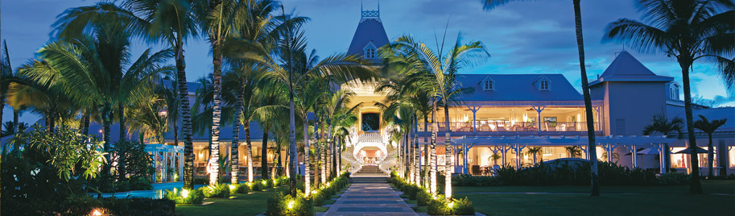

Sugar Beach - Mauritius
Located on the west coast of Mauritius, on the famous beach of Flic en Flac,
Sugar Beach is characterized by a colonial decor that harmonizes with the tropical sensuality and modern lifestyle.
The resort offers 258 rooms including 164 standard, 92 superior and 2 suites, all with private patio or balcony. Three themed restaurants: Mon Plaisir Restaurant with themed buffets and live cooking show, Tides Restaurant, featuring fine seafood, and Citronella's Café, which offers pizzas cooked in wood-burning oven, salads and light dishes for lunch, while dinner offers traditional regional Italian recipes.
Large space dedicated to the well being and fitness, thanks to the Spa with Hammam. A temple dedicated to the welfare and regeneration of body and mind in which a team of professional staff is always available to offer treatments to achieve total relaxation. Here guests can experience the latest trends in wellness, including the exotic black soap massage. The area is complemented by a fitness center with cardio machines equipped with 300 square meters, body building and beauty center.
Even the children have dedicated entertainment services, such as the Sun Kids Club, which welcomes children from 2 to 11 years, and the program of sports activities and evening @ Sungeneration weblog, dedicated to children aged 12 to 17 years.
For groups and incentive travel, Sugar Beach has a conference room that can accommodate up to 350 people and offers audio / video technology.